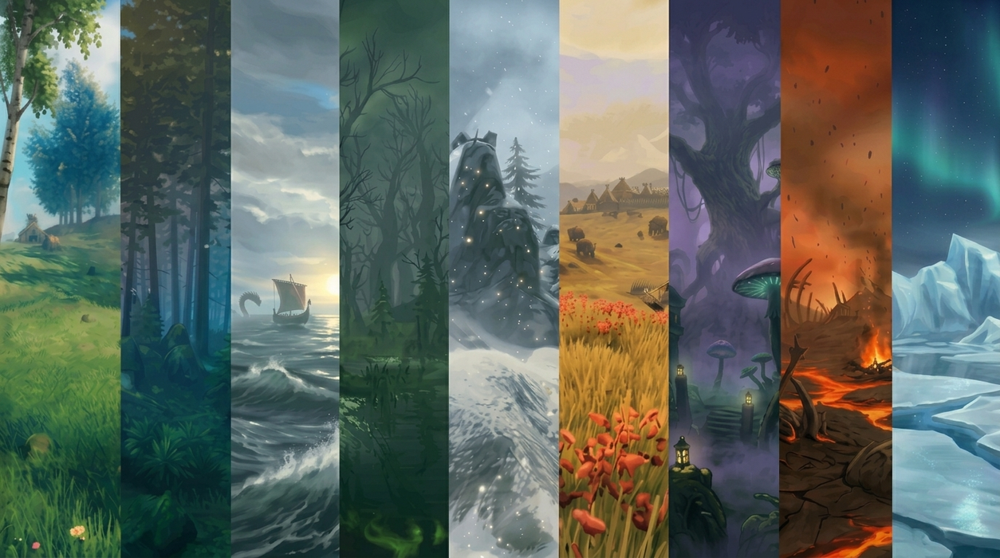
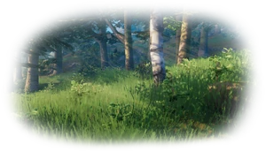
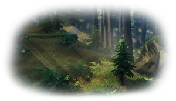
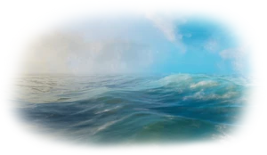
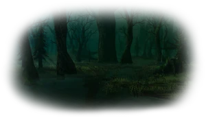
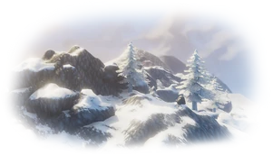
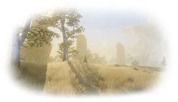
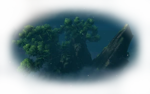

Biomas
Los biomas son regiones del mundo de Valheim que se pueden distinguir por su estética única, así como por las criaturas y recursos que tienen cada uno de ellos.
Ademas todos los biomas, excepto el oceano, son el hogar de los desterrados.

Early game
Pradera

Las Praderas son el primer gran territorio de Valheim: un lugar tranquilo y luminoso, con algunos peligros menores. Jabalíes, Greylings y enanos grises acechan entre sus bosques y colinas, mientras sus recursos permiten dar los primeros pasos hacia una vida vikinga. Madera, piedra, bayas y alimentos básicos abundan en este bioma, convirtiéndolo en un refugio ideal para construir y comenzar la aventura. Bajo su apariencia pacífica, las Praderas transmiten esa sensación de libertad y descubrimiento que define los primeros días en Valheim. Aquí, el Desterrado Eikthyr aguarda como la primera gran prueba del vikingo.
Bosque Negro

El Bosque Negro marca el verdadero comienzo del peligro en Valheim. Sus densos árboles y oscuras cavernas esconden Grisucios, Trolls y Esqueletos, obligando al jugador a estar siempre alerta. Es un territorio rico en cobre, estaño, madera resistente y otros recursos fundamentales para avanzar. Entre la oscuridad del bosque y el constante sonido de sus criaturas, el Bosque Negro transmite una sensación de misterio y tensión, dejando atrás la tranquilidad de las Praderas. En lo profundo del bosque, el Desterrado Elder espera a quienes se atrevan a desafiarlo.
Oceano

El Océano es una inmensa extensión de agua que conecta los distintos territorios de Valheim y convierte cada viaje en una aventura. Sus aguas esconden Serpientes marinas y Leviatanes, mientras las tormentas y la inmensidad del horizonte ponen a prueba al navegante. Con un buen barco, se transforma en el camino hacia nuevas tierras, recursos y descubrimientos. Más que un bioma para explorar, el Océano transmite una sensación de libertad, soledad y peligro constante.
Mid game
Pantano

El Pantano es un territorio oscuro y hostil, donde el agua y los árboles retorcidos crean una atmósfera inquietante. Entre sus ruinas y criptas acechan Draugr, Sanguijuelas, Babosas y Abominaciones, convirtiendo cada paso en un posible peligro. Sus tierras esconden hierro, corteza antigua y otros recursos esenciales para fortalecer a un vikingo. Un bioma que transmite tensión constante, donde avanzar con cuidado puede marcar la diferencia entre sobrevivir o terminar bajo el lodo. En el corazón de estas tierras corrompidas se encuentra el Desterrado Bonemass, una de las pruebas más brutales para un vikingo.
Montaña

Las Montañas son un territorio helado y despiadado, donde las bajas temperaturas y las fuertes pendientes convierten cada ascenso en un desafío. Lobos, Drakes y enormes Golems de piedra protegen sus cumbres, mientras las cavernas esconden valiosos recursos como plata y obsidiana. El frío obliga a prepararse antes de aventurarse, haciendo que cada expedición se sienta peligrosa y exigente. Entre la nieve y los imponentes paisajes, las Montañas transmiten una sensación de aislamiento, grandeza y supervivencia. En las alturas reina la Desterrada Moder, una amenaza que domina los cielos de estas tierras.
Llanura

Las Llanuras son un territorio abierto y peligroso, donde la aparente tranquilidad esconde criaturas capaces de acabar con un vikingo en segundos. Fulings, Muersquitos y Lueys recorren sus extensos campos, mientras el lino, la cebada y otros recursos permiten alcanzar nuevas cotas de poder. Su paisaje abierto deja al jugador expuesto y obliga a mantenerse siempre atento. En el corazón de estas tierras aguarda Yagluth, el Desterrado que domina las Llanuras.
Late game
Tierras Nubladas

Las Tierras Nubladas son un territorio extraño y peligroso, cubierto por una densa niebla que limita la visión y convierte cada paso en una amenaza. Buscadores, Soldados Buscadores, Gjall y Garrapatas acechan entre sus enormes raíces y antiguas ruinas, mientras la savia, el mármol negro y otros recursos permiten alcanzar un nuevo nivel de poder. Este bioma marca un antes y un después en la dificultad, obligando a cada vikingo a explorar con mucha más cautela. En lo más profundo de estas tierras aguarda La Reina, la Desterrada que las gobierna.